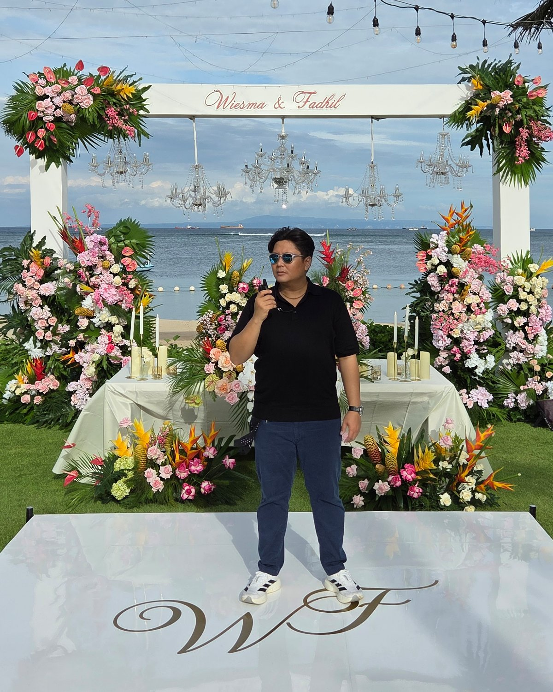
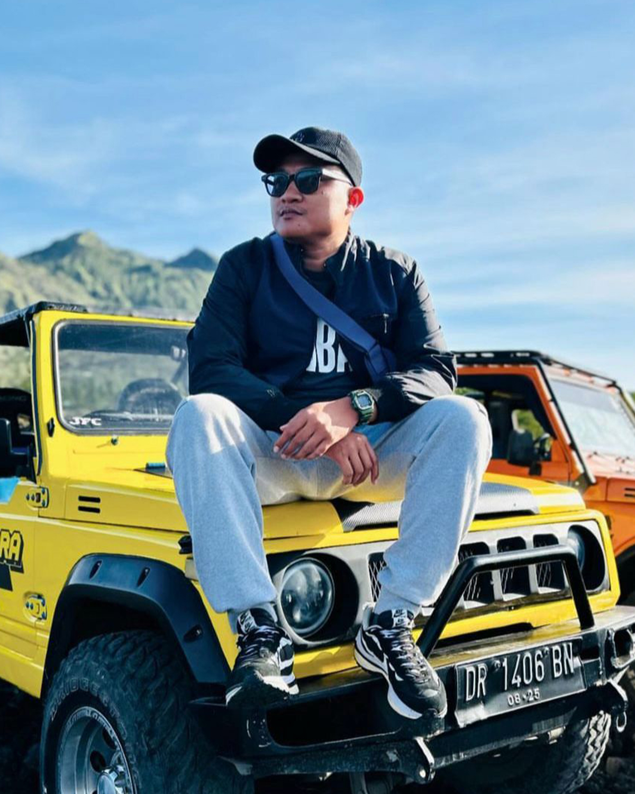
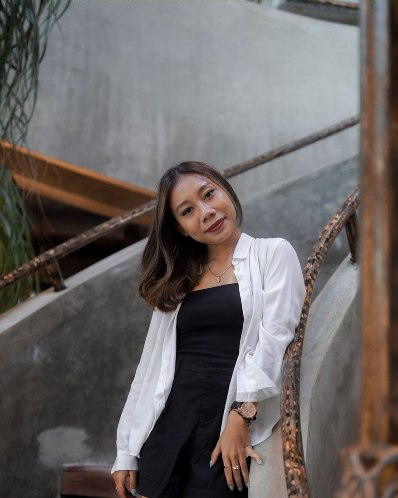
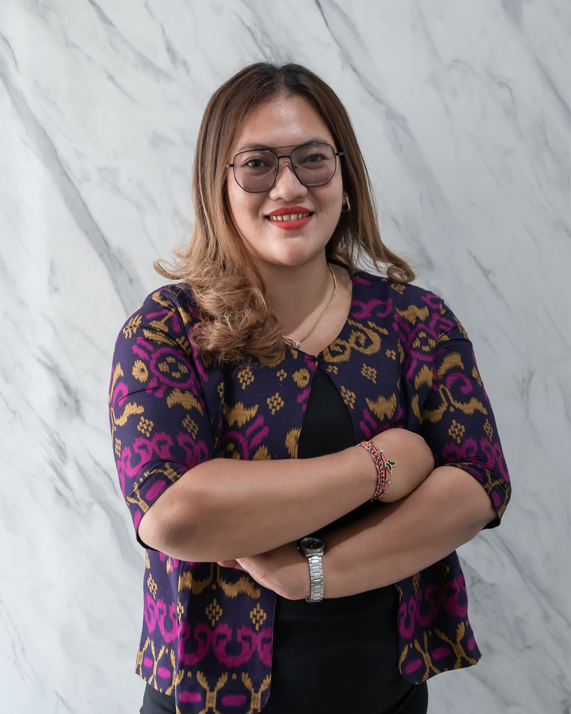
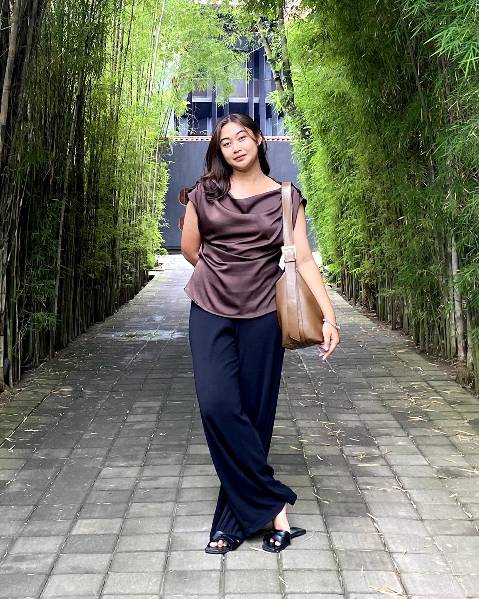
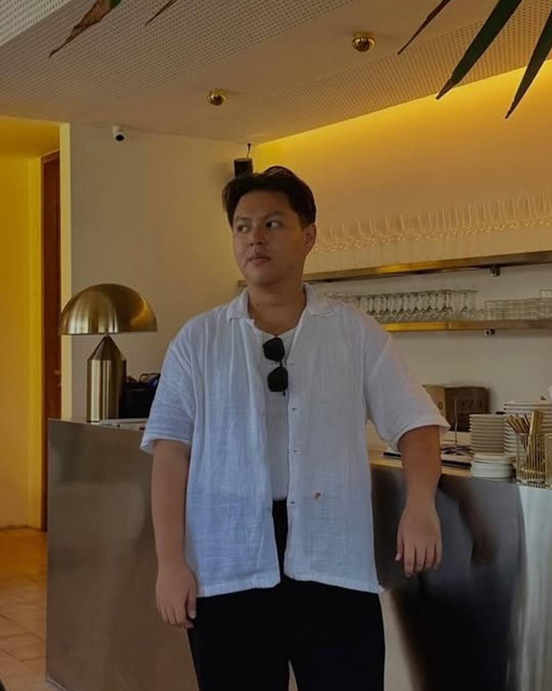

Crafting Timeless
Celebrations
in the Island of the Gods
Begin Your Storyin the Island of the Gods
Begin Your StoryBali Top Wedding was born from a deep love for the Island of the Gods and a belief that weddings should be as unique as the couples who celebrate them. For over a decade, we have been crafting extraordinary celebrations across Bali's most breathtaking venues — from clifftop terraces overlooking the Indian Ocean to sacred temples nestled within ancient rice terraces.
Our team of dedicated planners, designers, and coordinators brings an unmatched depth of local knowledge to every wedding we curate. We have spent years cultivating relationships with Bali's finest vendors, venues, and artisans — so that every detail of your celebration reflects the highest standard of quality and craftsmanship.
We serve couples from across the globe who dream of a destination wedding that is both deeply personal and effortlessly refined. Whether you envision an intimate elopement on a hidden beach or a grand reception beneath the stars, we are here to make that vision a reality — with warmth, precision, and an unwavering commitment to excellence.
Bali Top Wedding is more than a planning company. We are storytellers, dream-weavers, and dedicated partners in one of the most meaningful days of your life.
Our Story


From your first inquiry to the final farewell, Bali Top Wedding is by your side at every step. We offer a comprehensive range of services tailored to the unique needs of each couple — whether you are planning from across the world or arriving on the island weeks before your date.
Every service package is deeply personalised. We take the time to understand your vision, your values, and the atmosphere you wish to create — and then we bring it to life with the precision, creativity, and cultural sensitivity that only years of experience in Bali can offer.
A joyful garden celebration filled with laughter, lush greenery, and the unmistakable energy of two people completely in love.
Step Inside the Wedding →An oceanfront ceremony with sweeping views of the Indian Ocean — elegant, breezy, and surrounded by the people they love most.
View Their Story →"We flew from Sydney not knowing what to expect — and left with memories we will carry for the rest of our lives."


Planning a destination wedding from abroad can feel overwhelming. That is why Bali Top Wedding exists — to be your trusted eyes, ears, and hands on the ground in Bali. From the moment you reach out to us, you are assigned a dedicated planning team who will guide you through every decision, large and small, with patience and expertise.
Our vendor network has been curated over many years of working closely with Bali's finest florists, caterers, photographers, musicians, and venue managers. We do not simply make referrals — we build lasting partnerships with the best in the island, ensuring that every element of your wedding meets our exacting standards before it ever meets yours.
Our team is multilingual, culturally sensitive, and deeply familiar with the nuances of planning weddings for international couples. We understand that your time zone, your family's expectations, and your vision deserve nothing less than complete dedication — and that is exactly what we bring to every wedding we touch.
"From the first email to the last dance, Bali Top Wedding exceeded every expectation we had. They understood our vision better than we did — and turned it into something far more beautiful than we ever imagined possible."
Emily & Jonathan Crawford · Garden Ceremony · Ubud, Bali · April 2024

Bali's tropical climate means every month offers something different. Here's how to choose the perfect time for your wedding...
Read More →
From clifftop infinity settings to lush jungle clearings — we explore the venues that are setting the standard for luxury in Bali...
Read More →
The elopement trend is redefining luxury weddings. We look at why couples worldwide are choosing Bali for their most intimate celebrations...
Read More →


Passionate storytellers, dedicated to crafting your most meaningful day
Bali Top Wedding was founded on a simple but powerful belief — that every couple deserves a wedding day that feels completely, unapologetically theirs. Our story began over a decade ago, when our founders fell in love with the magic of Bali's ceremonies, its landscapes, and the warmth of its people, and decided to share that magic with the world.
Since those early days, we have grown into one of Bali's most trusted luxury wedding planning companies — serving hundreds of couples from across Asia, Australia, Europe, and the Americas. Each wedding we curate is a testament to our belief that true luxury is not about extravagance — it is about intention, authenticity, and extraordinary attention to detail.
Our team is made up of dedicated planners, designers, stylists, and coordinators who have spent years immersed in the world of Bali weddings. We know the island's finest venues, its most talented vendors, and its most breathtaking hidden locations — and we bring all of that knowledge to bear on every celebration we touch.
We are proud to serve an international community of couples who come to Bali seeking something rare: a wedding that is both deeply personal and effortlessly beautiful. We are here to make that possible — with warmth, precision, and a dedication to excellence that never wavers.
At Bali Top Wedding, we believe that a wedding is not simply an event — it is the opening chapter of a shared life. Every choice, from the fragrance of the florals to the final note of the last song, should carry meaning. Should feel true. Should be remembered not just by the couple, but by every guest who had the privilege of witnessing it.
We approach every wedding as a blank canvas. We listen deeply — to your stories, your values, your vision — before we ever begin to design. Because the best celebrations are not built from a template. They are grown from a conversation, shaped by trust, and brought to life by a team that cares as deeply about your day as you do.
We define luxury not by price, but by quality of experience. By the seamlessness of a perfectly coordinated day. By the quiet confidence of knowing that every detail has been considered, every contingency prepared for, and every moment curated to exceed your expectations.
"The finest weddings are not the most expensive ones — they are the ones where every detail whispers of the people at the centre of it all."
A collective of passionate professionals who have dedicated their careers to the art of celebration in Bali.

"Every wedding we create is a love letter — to the couple, to Bali, and to the art of celebration itself."
With over a decade of experience in the Bali wedding industry, Om Yoga leads Bali Top Wedding with a vision rooted in excellence, cultural sensitivity, and deeply personal service.

"On the day itself, calm is the most important thing I can offer. Everything else follows from there."
Made brings unmatched composure and local expertise to every event he coordinates. His deep knowledge of Bali's venues and vendors ensures every timeline runs with quiet, confident precision.

"Design is not decoration — it is the language through which your story is told without words."
Dita's eye for beauty has shaped the aesthetic of some of Bali's most celebrated weddings. She brings a painterly sensibility and editorial instinct to every space she transforms.

"The moment a couple trusts us with their day, we take that responsibility personally — every single time."
Ayu is the warm and dedicated voice that guides couples from their very first inquiry through to the final farewell, ensuring every client feels heard, understood, and deeply cared for.

"The most magical moments are made possible by the thousand invisible ones that come before them."
Alia oversees every logistical detail — from vendor coordination to day-of timelines — with precision and warmth that keeps the entire production seamless and stress-free.

"Great weddings are built on great relationships — with vendors, with venues, and above all, with the couples we serve."
Adam manages Bali Top Wedding's extensive network of trusted vendors and venue partners, ensuring every supplier meets the team's exacting standards of quality and reliability.
Tell us about your vision — we would love to begin the conversation.
Get in Touch